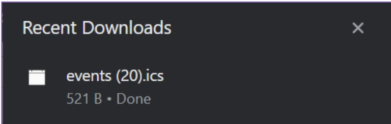

Being fortunate to participate in the Java/Software Engineering Bootcamp and completing
the learning phase, the next step involved embarking on a team project.
I introduced the idea of a Planning System and consequently took on the position of team leader.
Collaborating with three excellent colleagues, we managed to develop a convenient time management
and scheduling service within a span of two weeks.
In order to access the system, users are required to complete the registration process.
Once completed, they will be able to explore the various features and functionalities.
First and foremost, users have the option to add activities to their schedule.
There is also validation with an error message displayed if the start time is later than the end time.
The banner appears when clicking on the "?" located under the 'Public checkbox'.
All the activities will appear in the week-calendar and in the friends-calendar.
Also, the home page has daily schedule and opportunity to add notes.
Home page.
Talking about friends-calendar, there is a possibility to add friends by e-mail.
Within the notifications, users can view incoming friendship requests as well
as requests that were sent but subsequently declined by the recipients.
Now, when user has a list of accepted friends, all of them have a possibility to compare their schedule
in the friends-calendar. But if the activity is private, in friends-calendar it will be shown as "busy".
Purple represents one user, Red represents another user.
We also implemented the feature that enables users to sync their calendar with Google or Windows calendars using generated .ics files.
While working on this implementation, we faced difficulties related to time zones.
However, we managed to overcome them by including a time zone selection input.

Google calendar
In conclusion, this Bootcamp and the project has been an incredibly rewarding and valuable experience.
I gained proficiency in a new technology, Spring Boot,
mastered the art of collaborative project development,
including team leadership, and deepened my familiarity with Java, databases, Git and GitHub.
P.S. I extend my heartfelt gratitude to Accenture for this opportunity.
And a big thank you to my team for their invaluable contributions to this project. :)